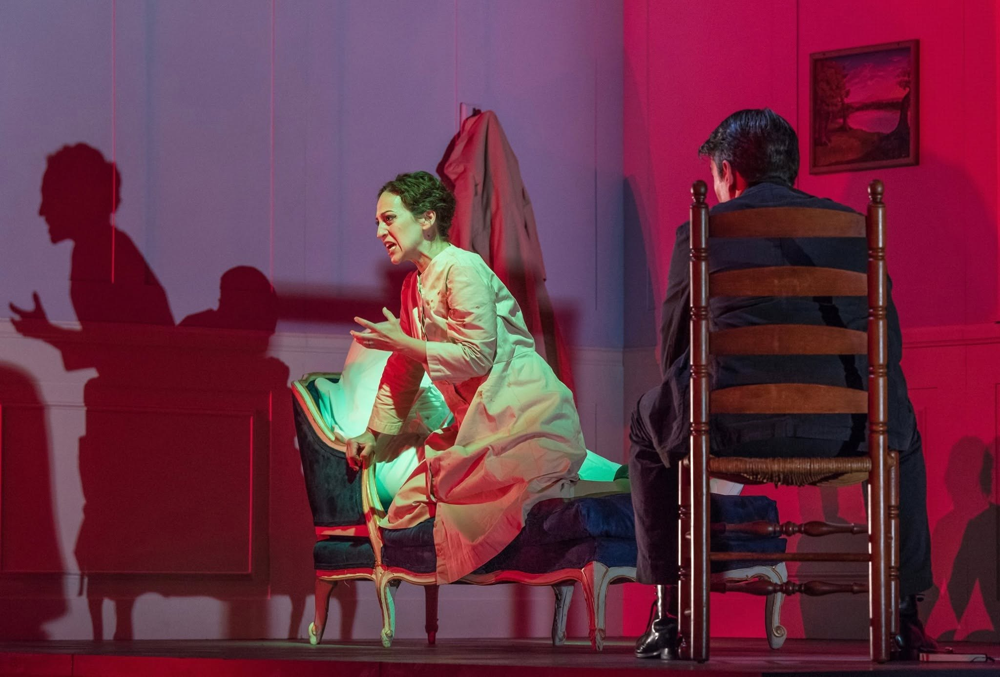

Company History, continued

Chapter 4
2014–2019
New Work and
New Stages
In 2014 the Board of Directors appointed Lawrence Edelson artistic and general director. His seasons were defined by firsts, in new repertoire and in new places to perform it.
Six projects that defined the era
- 2015The Long WalkWorld premiere, by Jeremy Howard Beck and Stephanie Fleischmann.
- 2015Dido and AeneasThe company’s first baroque opera, in a site-specific production at the National Museum of Dance.
- 2016Il PostinoThe company’s first opera in Spanish, by Daniel Catán.
- 2016The Witches of VeniceAmerican premiere of Philip Glass and Beni Montresor’s opera-ballet.
- 2017The Cradle Will RockAn 80th-anniversary production of Marc Blitzstein’s work, using his original orchestration for the first time anywhere in over 50 years. It was recorded for commercial release, the company’s first professional recording.
- 2019Ellen WestWorld premiere, by Ricky Ian Gordon and Frank Bidart.
Chapter 5
2020–2022
A Festival
Reimagined
In 2020 the COVID-19 pandemic forced the company to cancel the Summer Festival. It turned to new formats: a virtual education program for elementary school students, and America Sings, a live-streamed concert series amplifying BIPOC singers who have been historically underrepresented on the concert stage.
Live performance returned in 2021 with a modified season that included Man of La Mancha, the company’s first large-scale musical, in partnership with the Saratoga Performing Arts Center.
In 2022 the festival went region-wide, joining with venues across the area for opera, musical theater and concerts, from Sweeney Todd to Sky on Swings.
Chapter 6
2023–Today
Downtown and
Year-Round
After a national search, Mary Birnbaum was named artistic and general director in February 2023. That year the Young Artist program became the Festival Artist Program, a name chosen to recognize the broad range of singers in it. The company describes it as the second-oldest singer training program in the country.
The festival moved downtown to Universal Preservation Hall. In 2026, every mainstage production played there for the third summer in a row.
Education and community work grew alongside the stage: opera in more than 30 schools and venues across the region, an expanded Songs by Heart program in memory care communities, free programming for kids, and work with local artists.
The seasons put opera, musicals and living composers side by side. In 2023, the world premiere of Clarice Assad and Lila Palmer’s The Selfish Giant shared the summer with Don Pasquale and A Gentleman’s Guide to Love & Murder. 2025 brought In A Grove, La vie parisienne, She Loves Me and A Mass for Women in Bathrooms, and that December the company’s first winter production, La bohème. In 2026, My Fair Lady and The Elixir of Love joined Happy End, presented with The Glimmerglass Festival, Finger Lakes Opera and Seagle Festival.
New work moves through stages, and the company names them. In 2024 it commissioned Drift by composer Alyssa Weinberg and librettist J. Mae Barizo, its first full-length opera from an all-female team. In June 2026, Drift was presented in two workshop performances, with piano and electronics, at Universal Preservation Hall.
Performance Archive
Every season from 1962 to 2026 in one searchable record: 242 productions across 65 seasons, with premieres, workshops and concerts marked. Browse by decade or search by title or composer.
Browse the Performance ArchiveBy the company’s historical count
- 106fully staged works
- 66composers
- 42works by American composers
- 14premiere productions
Totals as published in the company’s history, which doesn’t give a date for the count.